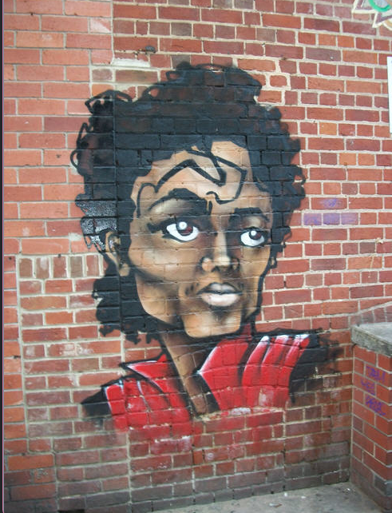
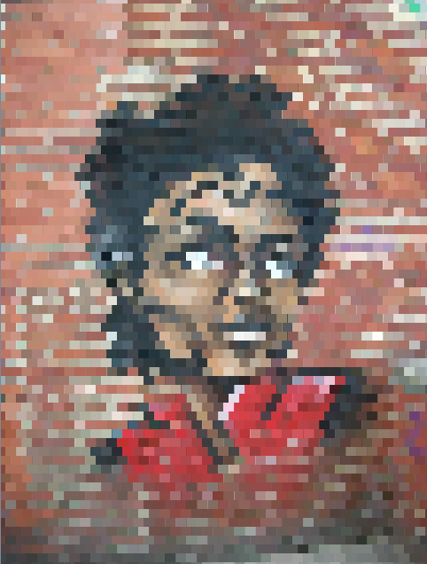
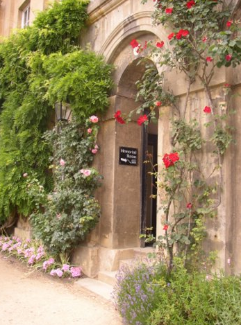
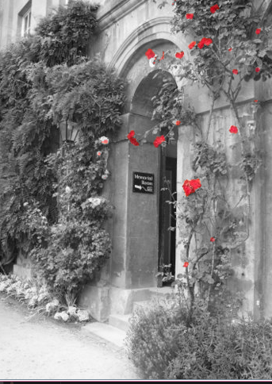

PhotoLab


About this Project
PhotoLab is a project I developed as part of my AP Computer Science A coursework in 2022. This project explored the concept of using the Java programming language to create filters for photos by adjusting and manipulating RGB (red, green, blue) values of pixels that make up a photo.
PhotoLab demanded meticulous programming to achieve the desired outcomes, as it required a lot of attention to detail to transform images in different ways.
This project also emphasized the significance of creating helper methods, which served as tools that could be universally used to manipulate pixels, yet when used in different arrangements, can produce completely unique filters.
Pixel by Pixel
PhotoLab reshaped the way I perceive images by transforming them into intricate arrangements of numeric RGB values aligned along X and Y axes. Moreover, this project encouraged me to view pixels from an analytical point of view, as every pixel has numeric values (RGB value). Additionally, this project also helped me gain more practice in converting hex to decimal numbers.
Here is some code and photos from photoLab:
public void pixelate() {
Pixel[][] pix = this.getPixels2D();
int counter = 0;
int red = 0;
int green = 0;
int blue = 0;
//loop through entire image with row major
for (int r = 0; r < pix.length; r++) {
for (int c = 0; c < pix[r].length; c++) {
//saving the values of RGB to create seemly bigger pixels; grouping 10 pixels into 1
if (r % 10 == 0) {
if (counter == 0) {
red = pix[r][c].getRed();
green = pix[r][c].getGreen();
blue = pix[r][c].getBlue();
}
// after 10 long pixels, the counter for pixels restart
if (counter == 11) {
counter = 0;
// setting the other pixels to the saved values above
} else {
pix[r][c].setRed(red);
pix[r][c].setGreen(green);
pix[r][c].setBlue(blue);
counter++;
}
// if the row value is not a number divisible by 10, set the RGB values to the same RGB values in the row above it
} else {
pix[r][c].setRed(pix[r-1][c].getRed());
pix[r][c].setGreen(pix[r-1][c].getGreen());
pix[r][c].setBlue(pix[r-1][c].getBlue());
}
}
}
}
 
More examples:
 
You can learn more at my GitHub link here.